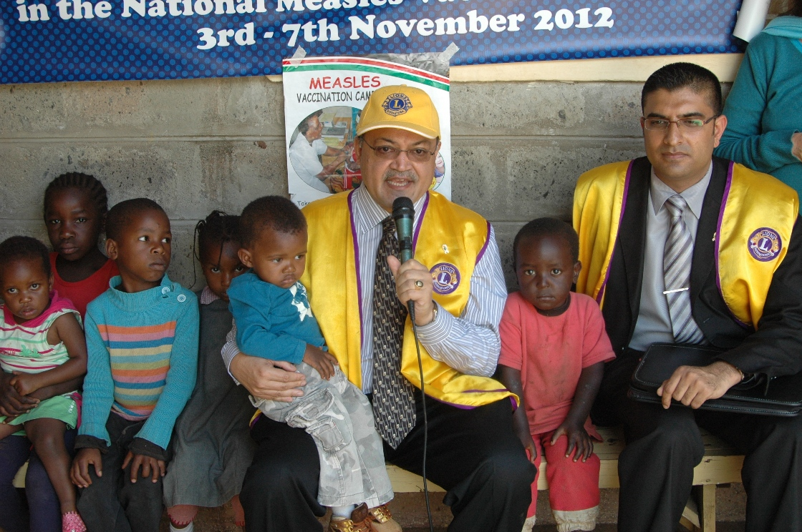

 The Lions SightFirst Eye Hospital
The Lions SightFirst Eye Hospital
I have over 45 years of work experience and am recognized as an authority in transforming loss-making institutions/companies and turning them into industry leaders, making them profitable. Identified to stage historic comebacks in performance, employee engagement, stakeholder mobilization including fundraising & investor buy-ins & building sustainable business models. I repair broken morale and build collaborative & innovative work-forces that are pivotal to businesses & organizations.
A Charter member of the Nairobi Greater Lions Club since 1986, Director Shah has held many offices within the association at Club, District, and International levels. Because of his passion for Membership Development, Director Shah was appointed an Impact Team and G.M.T. Team Leader. He had the privilege of serving as the Chairperson of the most important Membership Development Committee worldwide in our association. Currently, he is appointed as a Constitutional Area Leader of the Global Action Team, for Africa, and is also serving a 3-year term as a trustee of the Lions Clubs International Foundation.
His desire to promote Leadership Development has seen him serve as faculty on many International Lions Leadership Institutes and Schoolings. In addition, he has participated in many leadership workshops throughout Africa and Asia. He has also served as an International Group Leader for the District Governors Elect seminar several times. He is now a certified LCIP Trainer for Lions Clubs International.
Director Shah was active in starting the Lions Service Center in Kenya with the Lions Renal Unit, the Lions Dental Center, and the Lions Hearing Center, and has successfully initiated the first LCIF Lions H.I.V. Aids Center for Children in Africa. He has also been involved in establishing the first Lions Eye Bank in Africa and is currently serving as the Vice-Chairman of the Lions SightFirst Eye Hospital in Nairobi. He has been the pioneer and visionary leader instrumental in setting up the first two Lions Diabetic care centers in Africa.
Past Director Dr. Shah has also served as secretary and trustee to the Lions Clubs International Foundation and successfully spearheaded the challenge to support the Lions Campaign Sight First II Programme and single-handedly raised over US$ 5 million in Africa with over 12 Lead Gifts Donors. Manoj has also served as the Chairperson of the 36th and 46th ISAAME Forums. He is currently a Member of The Major Lead and Corporate Gifts Committee for campaign 100 and has recently become a major lead gift donor, donating over USD 100,000 personally.
Dr. Manoj Shah is a very well-decorated Lion and has also been presented with the prestigious “HEAD OF STATE COMMENDATION” Award by His Excellency the President of Kenya for his dedicated role and active participation in Nation Building. He is also a recipient of the highest award of Lions Club International “THE AMBASSADOR OF GOODWILL AWARD”. He has also been conferred with an Honorary Doctorate in Humanities.
In addition to his Lion activities, Director Shah is active in numerous professional and community organizations. He is currently the Chairman of the M.P. Shah Hospital, Vice-Chairperson of the Lions Sight First Eye Hospital, Chairperson of the Automobile Association of Kenya Road Safety Council, Member of the Priory Council of St. Johns, and an active member of the Visa Oshwal Community. He previously served as President of the Kenya Motor Sports Club, and Director of The Safari Rally Ltd. Director Shah is a successful businessman with interests in the Automobile, Property Hospitality, and Finance sectors. Dr. Manoj Shah is married to Jayna, an equally dedicated Lion Member of Lions Club Nairobi Greater. Both Manoj & Jayna are Progressive Melvin Jones Fellows and proud parents of two daughters, Priyum and Soyum.